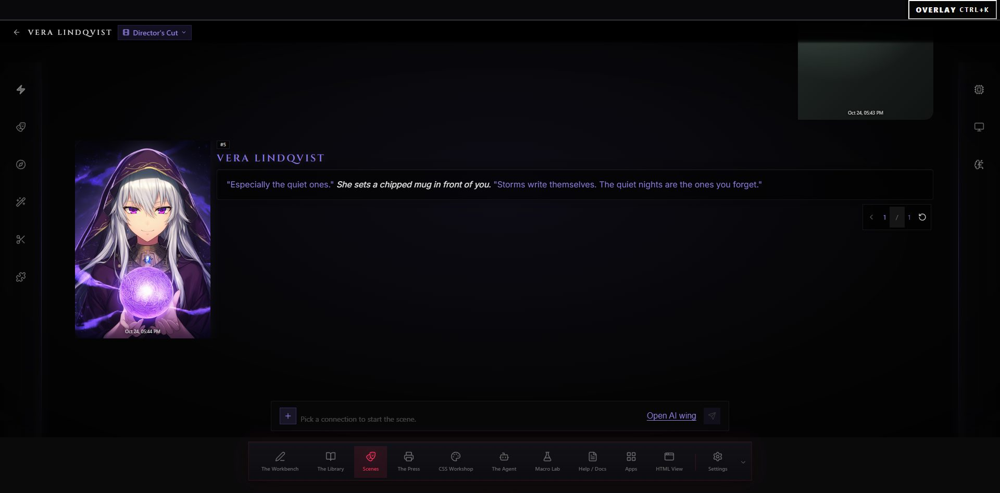
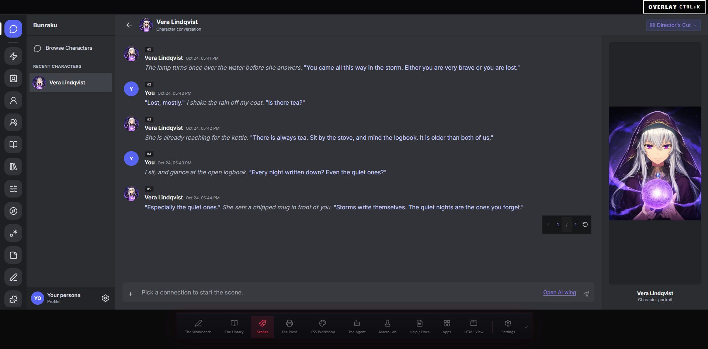

GirliePop Bundled
appearance.accent · appearance.assets · appearance.palette · appearance.shape · appearance.surfaces · appearance.type
Every knob for the whole studio. Changes apply the moment you make them: no apply button, no restart.
Theme, your color, the chat layout, the stage lights and the accessibility knobs. Each one applies live.
Requested appearance. Pick one to request it; it applies only when the host confirms its current permission.
A package sets checked colors, fonts, shapes and screen layouts, and may add its own checked styles, fonts, images and slot content. It cannot run scripts, reach the network, or restyle this panel. Every power it uses is listed here for you to approve.
Approval applies to this exact digest. A changed package needs a new review and approval.
This bundled appearance was revoked. Review the host-verified package digest and grants before restoring it. When the host package changed, this reads "Review update for", with "The host-verified package changed. Review its digest and grants before applying the update."
Moonlit Quartet installed with explicit approval. Select it above to apply.
Installed themes are hidden until the theme state is repaired. (Shown only when the catalog reports a state error.)
The workspace accent. Entity colors stay independent.
How every chat is laid out.


The light rays behind every room. Moving follows your pointer a little; Still paints one frame; Off leaves the plain dark stage.
Never below 12 px.
Turns off slides and the lift on buttons.
Stronger borders on rows and controls.
Where Bunzai opens, what the Library shows first, where you publish, and the engines this machine has.
The room Bunzai opens in when you start it.
The deck you see first when you visit the shelves.
Pick any that fit. Every format stays ready either way.
Rendering a macro through another tool's own engine needs a copy of it on disk. Paste the folder's path and press Save; the answer comes from looking for the engine's own file inside it. Kit uses the same folders.
The folder holding SillyTavern's install. Kit uses it too.
Set by MARINARA_ROOT for this run, so the folder below is not being used. Unset the variable to go back to the saved one.
The folder holding that engine. Kit uses it too. (Two more states: "saved, but nothing is there now", and "MARINARA_ROOT is set but no engine is there".)
How the editors save, reopen and lay themselves out. Layout and fill-in changes land the next time a character is opened.
Save half a second after you stop typing. Ctrl+S still works, and still saves at once.
Restore the pieces you had open, and which one you were editing, after a restart or a crash.
Bento shows every field at once; Playbill turns them into acts you page through.
Grid shows every field to edit directly; Steps walks you through like a quiz.
Follow it to the Workbench, stay where you are, or ask every time.
The chat-summary settings a scene starts with. These apply to scenes you start from now on. A scene already started keeps its own settings (Context wing, Memory).
Create a summary on its own. Turning it on summarizes every 20 messages.
The number of messages between automatic recaps. Zero turns automatic summaries off. (Hidden for the Every exchange method.)
Send the saved summary to the model with each reply.
Older messages the summary covers leave future prompts but stay in the scene. Needs the summary to be sent.
The newest messages kept word for word beside the summary. (Shown only while hiding is on.)
Rolling recap rewrites one block, Growing timeline extends it, Every exchange adds a line after each reply.
Lower values make recaps steadier; higher values allow looser wording.
The most a summary may use.
Which models this studio can reach, and which one it uses. Shared with Kit in the terminal: adding one here adds it there.
The saved model vault could not be recovered, so the list below is empty. Nothing was deleted from disk. (The server words this notice; it is never swallowed.)
Pick a model before saving. (Shown when a draft is refused or a request fails.)
MCP in both directions: servers this machine runs so their tools join Kit's belt, and Bunzai's own belt for any MCP client.
Programs this machine runs so their tools join Kit's belt. Every external tool asks at the Gate before it runs.
servers.json line 7: command is missing, so "scratch-pad" was skipped.
uvx mcp-server-fetch --ignore-robots-txtC:\tools\notes-mcp.exe --vault D:\notespython -m image_lab.serverenv lines are KEY=VALUE; "API_KEY" is not. (Shown when a line is refused; the Name is locked while editing.)
Point any MCP client at Bunzai's own belt: the library, catalogs and renderers. Your client asks before each tool runs.
claude mcp add bunzai -- bunzai mcp "C:\Users\chiev\Documents\Studio"
Control the Spotify app you already have open from the Stage wing: play, pause, skip, volume, and which device it plays on. Playback control needs Spotify Premium. Turn it on for a scene in the Props wing.
Make an app at developer.spotify.com/dashboard and paste its Client ID (32 letters and digits). It is yours alone; Bunzai has no shared key. The sign-in is kept in this computer's key vault.
Add this to your Spotify app's Redirect URIs, exactly. Spotify allows a plain http address only for 127.0.0.1, and lets that address use any port, so it still works when Bunzai starts on another one.
http://127.0.0.1/spotify/callbackConnect opens Spotify's sign-in in your browser. Bunzai sees only the playback state and the controls, never your password.
Disconnect forgets the sign-in on this computer. To take the app's access away at Spotify too, remove it at spotify.com/account/apps.
A browser window opened to sign in to Spotify. Come back here when you are done.
could not read the Spotify link. (Shown when the status call or a connect fails.)
The library is not open. Security settings appear once it is. (When it could not open: "The library could not open, so there is nothing to lock yet." While reading: "Reading the library...")
Who gets in, and how.
After the change. The old key is still being cleared from the library file (2 rows). Bunzai will try again in the background.
could not try again. (Shown after a failed retry or lock move.)
Three months since the last run-through. Bunzai stores no single word, so the whole script is asked for.
On. Each open, and after 15 min idle.Off. This computer opens your library by itself.
Written September 24, 2026. Last rehearsed June 11, 2026.Not written yet. Twelve words that open your library on any computer.
Closes the stage door until the password or your lines are given.
Opens every saved piece and chat and compares it with what was saved. Nothing changes until you confirm a repair, and a repair sets things aside, never deletes. No backup is needed first.The check could not start: the library is busy. Try again in a moment.
Looking at your chats, then your characters and lorebooks. You can keep working.
47 of 96 parts looked at
Looked at 96 parts: 88 chats, 61 characters and 14 lorebooks all match what was saved.
The saved copy differs from what was last written, so part of it may have been lost.
It could not be opened with the library's key.
The check did not finish, so this is not a clean result. If the library locked, unlock it and check again.
Shown only when there are any. This library has also been opened on another computer, from a copied folder or a restored backup. Each one below can still open it by itself.
These open on the top layer, above every page and beyond any theme. Unchanged in behavior; shown here in the new frame.
Changing the password, the lines, or the remembered computers needs the password or your lines. You will not be asked again for five minutes.
Once set, every computer forgets its own key and the door asks for this one.
Twelve words that open your library on any computer. Write them down; Bunzai stores no single word. Then you recite them back (Act 1, The Audition: "Take the stage") before your old lines stop working. Rehearsal asks for the whole script ("Run my lines").
It will no longer open the library by itself. To open it there again, you will need your lines.
Your library, copied while you work.
Makes a copy right away. Hourly copies carry on as usual.
Writes everything to a plain folder beside your studio folder, ready to import elsewhere. The folder is not encrypted.
The last 24 hourly copies, 7 daily, and 4 weekly; older ones are cleared automatically. Copies made by you stay until you remove them (3 of 10). The 2 copies saved before a restore stay as long as they hold newer work than the rest; each can be moved to the trash. Copies use 412 MB of this disk.
Showing the newest 5 of 31. Newest first; a copy is named by when it was made.
Shows what would change before anything does. A copy of how things are now is kept first, so this can be undone. Afterward: "Restored. Back to ...", with Undo this restore and Keep it. (Protected prompt, unchanged.)
Reach this studio from your phone or another computer, over a private, encrypted link. Off by default. Turning it on needs a one-time free Tailscale sign-in; Bunzai opens that page for you. (Without the helper the line reads: "Reach this studio from your phone or another computer on the same network. Off by default, and no account needed.")
Bunzai stays on your machine. A private, encrypted link lets your own devices reach it, with no router changes and no ports opened. You sign in to Tailscale once (free); we open that page for you.
Mesh helper downloaded with v1.74.1.
The download did not finish. Nothing was installed. (Shown after a failed fetch.)
The private-mesh link needs one extra piece that is not bundled with the app, to keep the download small. Bunzai can fetch it for you now, once.
It is downloaded from Bunzai's own releases and checked against a fingerprint built into this copy; a file that does not match is thrown away rather than used. You can skip this entirely and use LAN mode below, which needs no download.
Not offered for this platform: "Private-mesh link not available in this copy". Nothing is wrong with your studio, and nothing else is affected. Use LAN mode below to reach this studio from another device on the same network.
A Tailscale sign-in page just opened in your browser. Sign in once (free), then come back here. This reconnects on its own.
Tailscale needs HTTPS certificates enabled for your account, a one-time switch. Open your Tailscale settings, turn on HTTPS Certificates, and this connects on its own, you do not need to come back here and click anything.
Open this link on any device signed into the same Tailscale account, your phone, another computer. It is a real, trusted https link with no certificate warnings.
To add a device: install the free Tailscale app on it, sign in with the same account, then open the link above.
The Tailscale helper exited before it answered.
Nothing else in Bunzai is affected.
You are connected to this studio remotely. Remote access is turned on or off, and devices are managed, only on the computer actually running Bunzai, never from a device that connected in. Open Bunzai on that computer to change these settings.
A no-account option: reach this studio from devices on the same network (home or office Wi-Fi), with no Tailscale sign-in. Each device enters a connect code, and you approve it here before it gets in.
On a device on this network, open the link and enter this code. Only enable on a network you trust.
Certificate fingerprint (verify on first connect): A4:1F:9C:07:5E:B2:D8:63
Every release, newest first, with what changed in each. See how far behind you are and read the full commit log for any version. Checks GitHub only when you open this page.
GitHub limits how often the release history can be fetched. Try again in about 12 minute(s).
GitHub could not be reached. Nothing else is affected.
You are on v0.14.2, the newest release. The timeline below still lets you look back.
Your version (0.14.1-dev.7) is not one of the published releases, it sits between them (a source build). The timeline below still shows every release you can move to.
With no releases published: "No published releases yet."
Your studio folder (pieces, settings, keys) is never touched, only the program changes. Bunzai restarts itself when it is ready.
Your studio folder (pieces, settings, keys) is never touched, only the program changes. Bunzai restarts itself when it is ready.
Your studio folder is never touched, only the program changes.
Do not close Bunzai. It restarts itself when the switch is ready.
Done. Everything is ready.
The switch to v0.14.2 did not complete, so nothing changed. Your app is exactly as it was.
Either the failure message, or (packaged build) the verified download's message, with a single OK.
The running build, where your studio lives on disk, the project links, and the app's own controls.
Version 0.14.0, installed app. Checks GitHub only when you press the button; nothing runs on its own.
Version 0.14.0, running from source. Checks GitHub only when you press the button; nothing runs on its own.
Version 0.14.0, temporary browser studio. The hosted build updates when Bunzai deploys it.
Other results: "Asking GitHub...", "You are on the newest release.", "No published releases yet.", "Could not reach GitHub."
Your pieces are stored here, encrypted in library.db. A copy of this folder opens on another computer only with your recovery words; to share pieces, export them.
This studio exists only in this page. Export work before reloading or closing it.
C:\Users\chiev\Documents\StudioTab memory only
Open source under AGPL-3.0. Bugs and wishes welcome.
Restart relaunches the studio in place; Quit stops it fully (browser tabs stop working until you start it again). Unsaved edits on the Workbench are lost either way. Reset this window forgets only what this page remembers - the app you were on, the agent conversation, the overlay's position - and never touches your studio, your tabs or your settings.
Press Restart or Quit once to arm it (it turns "Really ...?" for four seconds), again to fire. While restarting: "Waiting for the studio to come back..." After quit: "You can close this tab. Start it again from your shortcut."